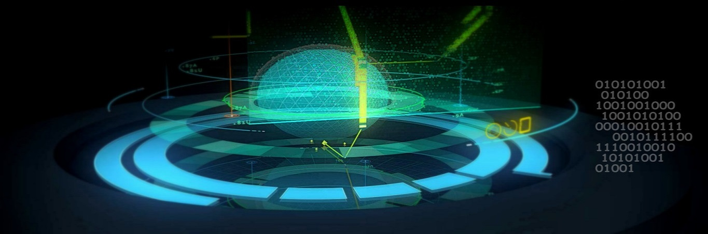

Before you can begin learning how a subject works, it's important to understand why the subject matters- what it can do and why it has value. Understanding the reasoning behind Quantum Computing will help you understand its components. So let's get started.
You are most likely familiar with the classical computer, which runs on bits which can be either 0 or 1. The computer you're on now is a classical computer, and while it is fantastic for tasks such as browsing the internet, or typing a paper, there are some tasks that even our fastest classical computers have difficulty with. You see, right now your computer can only do one calculation at a time, and regardless of how fast your computer is, it can be extremely time consuming for large algorithms to find solutions with this limitation. Quantum computers on the other hand, do not have this limitation.
Quantum computers work with qubits, which we will get into the nitty gritty of in future sections. For right now though, it is enough to imagine a qubit as having the possibility to be any combination of the classical bits 0 and 1. This allows processes, which normally would take an exuberant amount of time, to finish quickly. So a quantum computer has a much higher capability to complete algorithms.
This quirky nature of the qubit will make a quantum computer the best candidate for two types of problems we have today: optimization and representation of molecular chemistry. For example, right now much of security relies on the factoring of numbers to protect information. The system will be based on the number "n", and the key to cracking the system would be to find two numbers "p" and "q" that n = p x q. This may seem silly as many people learn factoring at a young age, but finding the values chosen for a security system, from an extremely large number like:
452349583472384710238947230897418341315948952183923475289347508374123419234898759328475028347508341341238740845720948750234987518457238475203485702394857209384754751984750243857209834752098475048751098734081723487350457459845763452349859234768274529384509345893478924953475928347523984572039485720394854572304857230948572348573048This could take billions of years for our current computers to do, but a much shorter time for a quantum computer to accomplish. So in this case, quantum computing has the obvious reward of being able to crack much of today's security.
As stated earlier, qubits are also prime for demonstrating the interactions that atoms have with other atoms. Qubits act similarly to nature- to the chemical behaviors of electrons, which means a quantum computer can simply study the actions of the qubits to see how molecules would interact in real life. In theory, a small quantum computer, with only a few dozen qubits would be able to model molecules that our fastest supercomputers are unable to. This could lead to major discoveries in medical fields as research teams would be able to use a quantum computer to gain a better understanding of chemical interactions.
When many people hear about a quantum computer, they see it as a replacement for today's computer, but this will most likely not be the case. Quantum computers will only provide speed advantages for certain types of problems - in essence, the system is only as good as the algorithms behind it. Right now classical computers utilize classical algorithms that are extremely effective at day to day tasks, and there wouldn't be a need for the average laptop user to own a quantum computer. So even if the personal quantum computers come out in the next few years, until new quantum algorithms are developed that improve the speed of day to day tasks, its safe to say that scientists will be the main quantum computer users.
The other misconception is that scientists have to wait to own their own quantum computers in order to develop algorithms, but thankfully this is not the case. Quantum computing is based off of quantum mechanics, and we have the knowledge of the basic components, and they are highly unlikely to change. The qubit and the gates that affect quantum logic will work the same regardless of the hardware we have, so for years scientists have been developing these algorithms. We will get to these algorithms soon, but before we can run, we have to be able to walk.
If you've ever had the chance to watch the end clips of the Guardians of the Galaxy movie, you've seen a prime example of how a qubit acts. If you haven't, you can watch it here.
Groot, the dancing tree, acts like a qubit, and Drax, the alien sharpening his weapon is an observer, just like us. At any given moment, Groot can either be dancing or pausing, Drax has no idea. Drax can only tell what Groot is doing if he looks at Groot, and then immediately, Groot is locked into an action. In this clip Groot stops moving for as long as Drax is looking at him, and we can symbolize that with the 0 bit. However a qubit can also be paused as the 1 bit, in which case Groot would be dancing until Drax looked away again.
You might see how this is very different than an ordinary bit. For example if we just had a simple stick, we would notice that the stick does not move. We can represent it as a 0 bit. When we look away, we can guarantee that the stick will not be moving, as it is a stick. Classical bits are rigid; Qubits can dance. Because of this, they get different notations than bits.